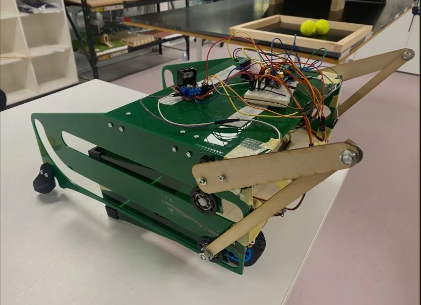
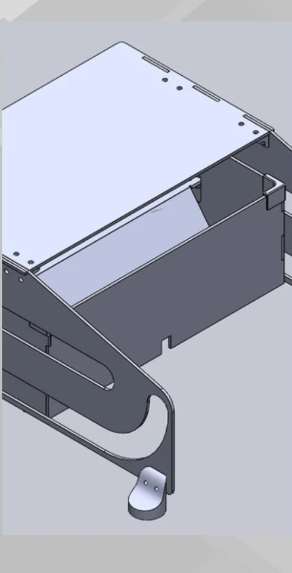
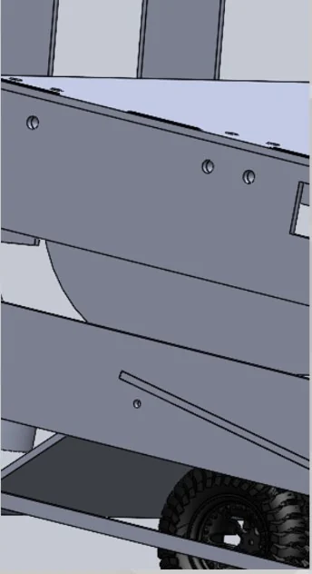
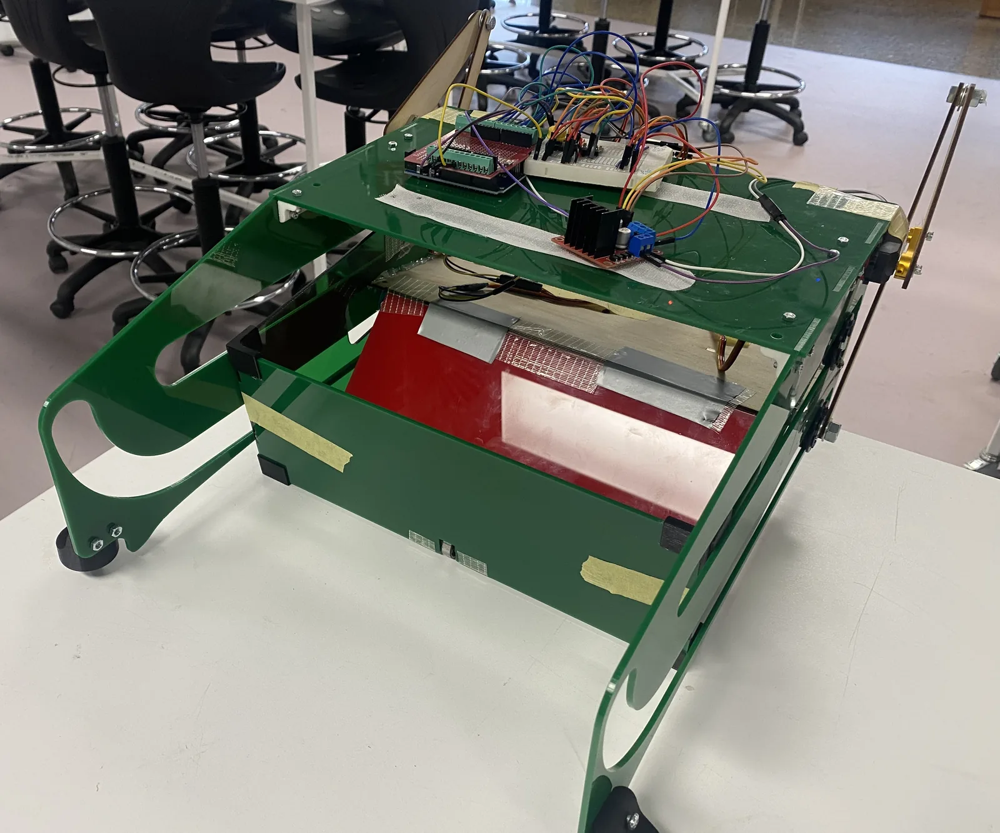
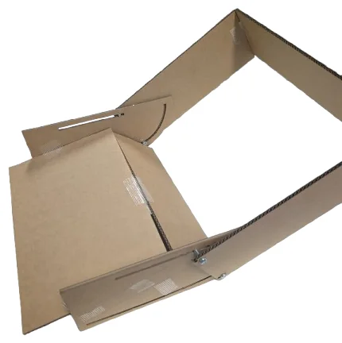
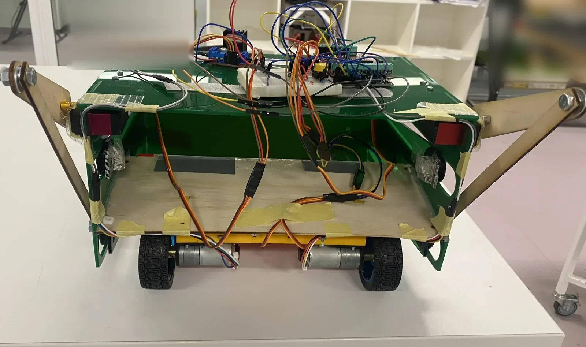
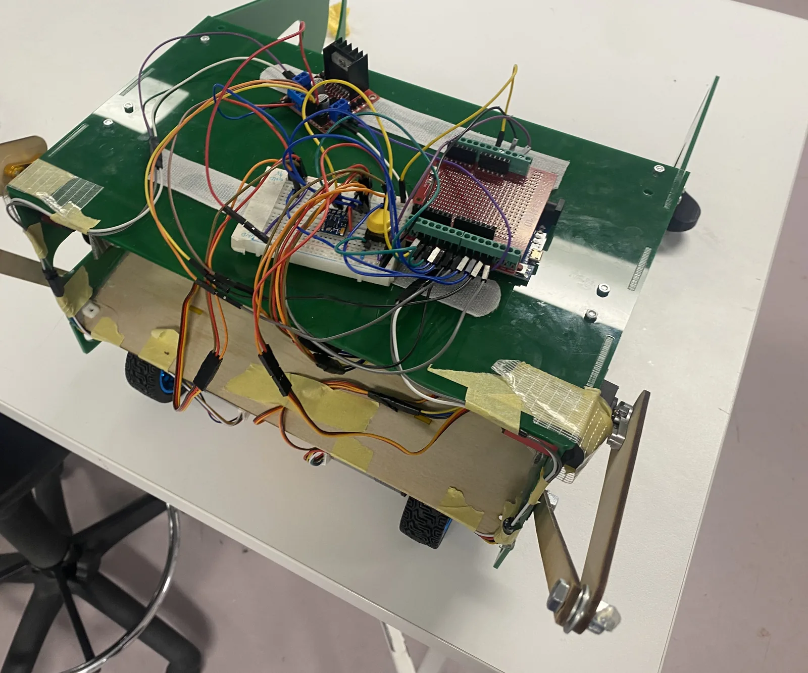

Coursework · Team design project
Warmandesign and build
A university coursework project. With three team mates I designed and built a small autonomous vehicle to the rules of the Warman student design-and-build competition: collect balls, cross a seesaw, drop the balls in a zone. I led the mechanical design. On the demonstration day it collected all three balls but did not get further, and this page covers why.

- Type
- Coursework, team design and build project
- Team
- Four students
- My role
- Led the mechanical design, SolidWorks CAD and mock-ups
- Tools
- SolidWorks, laser cutter, 3D printer, Arduino
- Result
- First stage worked: all three balls collected
Overview
This was a team project in my mechanical engineering design course, so it is coursework. The brief was to design and build a device to the rules of the Warman student design-and-build competition, and to record the whole design process in a group report: requirements, concepts, selection, prototypes, testing, a failure-mode analysis (FMEA) and a sustainability analysis.
Compared with my internship project, this one highlights a more hands-on and team-based side of my engineering development. It also did not fully work. The device collected the balls, but the seesaw and deposit stages did not run in the demonstration, so I have written up the testing in some detail.


The challenge
The device had to do the whole job by itself after one button press.
On a slightly tilted track, it had to collect three balls of different sizes (a tennis ball, a racquetball and a table tennis ball) placed at random in a 3 by 3 grid, cross a pivoting seesaw, drop the balls into a deposit zone, and stop completely in an end zone. The limit was 120 seconds, and nobody could touch it once it had started.
- Size and mass
- Fit inside a 400 mm cube at the start, and weigh less than 6 kg.
- Autonomy
- Start from one switch or button. All power and control on board. No pre-assembled robotics kits, although microcontrollers and motors were allowed.
- Safety
- No sharp parts, insulated and secured wiring, and every part fixed to the body.
- Build
- Made by the team from a small materials budget, with the build meant to fit in six weekly four-hour workshop sessions.
The group report turned the brief into user requirements and then into 24 numbered design input requirements, each one something we could check. We used the same numbers at the end to check the finished device.
The device
The final prototype is a two-tier chassis. The drive, the collection arms and the trays are on the lower tier, and the electronics sit on the upper deck.
- Chassis
- Laser-cut 3 mm acrylic side panels and deck, a plywood tray and plywood arms, and 3D-printed PLA brackets and bearing housings. About 390 mm long and 330 mm wide, inside the 400 mm cube.
- Drive
- Two geared DC motors with encoders driving two wheels through an L298N motor driver, with ball-transfer castors on printed PLA mounts at the front.
- Collection
- A pair of side arms, one on each side, each guided along a cut-out track in the acrylic side panel on 20 mm bearings in printed housings. Two 25 kg servos move them through linkages, so they swing forward and up, then back and down, raking the balls into the tray.
- Deposit
- A ramp hinged at the rear and lifted by two small servos. The balls roll out under gravity into the deposit zone, and the ramp reaches slightly over the zone so they cannot escape.
- Turning
- Two-wheel differential drive. A magnetometer was meant to hold the heading, so that turns stayed consistent from run to run.
- Control
- An Arduino Leonardo runs the sequence after one press of a push button. The details are under Electronics and code.

Design decisions
We chose the design in three parts, collection, travel and deposit, so that each sub-system could be compared on its own.
Each of us aimed to sketch one or two ideas for each part, which gave fifteen concepts: seven ways to collect the balls, five ways to travel and three ways to deposit them. We scored them in a weighted decision matrix (Pugh’s method), with each criterion weighted from 1 to 10 for how much it mattered. Reliability, accuracy and safety carried the most weight, and aesthetics carried little.
| Sub-system | Concepts scored | Chosen (weighted score) | Runner-up |
|---|---|---|---|
| Collection | 7 | Arm on an upward guide rail, 631 | Horseshoe-shaped rail, 623 |
| Travel | 5 | Two-wheel drive with a magnetometer, 687 | Jack system, 636 |
| Deposit | 3 | Hinged ramp, 611 | Pipe, 565 |
Why those won
- Collection. The rail scored highest on reliability, accuracy and safety (9, 9 and 10) and on mechanical simplicity (9): a physical track makes the arm follow the same path every run. The claw concepts needed extra servos and more code, and the conveyor needed another motor.
- Travel. The magnetometer concept kept the simple two-wheel drive but added a way to turn to a set heading, because turning by wheel speed alone can be inconsistent from run to run when the power fluctuates. The sensor had to sit above the drive axle, away from the magnetic fields of the motors.
- Deposit. The balls start low, so tipping a hinged ramp and letting gravity do the work was easier to build than lifting them up to a pipe.
The final design joined the collection arm from the hinged-arm concept to the guide rails of the rail concept, and added the magnetometer and the hinged ramp.
| Material | Used for | What we found |
|---|---|---|
| Cardboard, 3 and 4.5 mm | Early prototypes | Quick and cheap for checking dimensions, but not stiff enough. |
| Acrylic, 3 mm | Side panels, deck, guide tracks | Stiff, with low-friction bearing tracks, but brittle. Hand-drilled holes cracked it, so every hole was cut in SolidWorks before laser cutting. |
| PLA, 3D printed | Brackets, bearing housings, castor mounts | Complex shapes at low cost, but tolerances had to be tight where PLA met acrylic. |
| Plywood, 3 mm | Tray, arms, and parts that had given trouble in acrylic | None of the plywood parts needed recutting. |
The sustainability analysis in the report looked at the chassis. Acrylic is a petroleum-based plastic that is hard to recycle, and our breakages and design changes meant cutting some parts more than once. Some acrylic parts were replaced with plywood, which comes from a renewable source.
Design FMEA: two failure modes we planned for
- The arm could jam out of its rail through an uneven join between arm and rail, overloading the chassis and possibly cracking the acrylic. The fix was to hold the arm on the rail with bearings.
- The arm servos could swing the acrylic arm down fast enough to fracture it. The fix was to move the servos in small steps instead of one large movement.
Prototypes
Four prototypes, each one a response to what testing showed on the one before.
-
Cardboard, to check the concept
Prototype 1 was laser-cut from 3 mm cardboard, from 2D SolidWorks models: two side frames, a central tray and external arms, joined with tape and hot glue. It confirmed that the dimensions fitted the competition layout. The cardboard was too flexible, though, so the frame twisted and the parts would not stay aligned.
Fig. 07Prototype 1 in CAD 
Fig. 08An early cardboard prototype -
Slots and tabs, and an undercarriage
Prototype 2 stayed laser-cut but moved to 4.5 mm cardboard with slot-and-tab joints for the tray, the wheel mounts and a housing for the servo and electronics. A slotted insert at 10 degrees stiffened the join between the tray and the sides. Under the tray went an undercarriage of five interlocking parts with an L bracket for the motor and wheel. Smaller bearings were not available, so a 10 mm bearing from the workshop sat in a custom 3D-printed housing.
Testing showed that the arm could not reach every ball position.
Fig. 09Prototype 2 in CAD Fig. 10The slotted undercarriage -
More reach, and a switch to acrylic
To reach every ball position, prototype 3 lengthened the side panels to 400 mm and built the roof into the side panel for stiffness. The guide track grew to take 20 mm bearings in a printed PLA housing, and a second 20 mm bearing at the heel of the arm wall stopped it scraping on the way back. The tray went from 250 mm to 125 mm long, which saved weight and still left enough arm travel. Custom L brackets drawn in SolidWorks joined the walls to the roof and tray without any drilling after cutting. Hand-drilled holes had cracked the acrylic, so from here on every hole was part of the laser-cut drawing.
The side panel in Fig. 12 is from the final drawings, 390 mm long, with the two cut-out tracks the arms run in.
Fig. 11Prototype 3 in CAD, with extended tray sides Fig. 12Side panel drawing with the guide tracks -
A stable frame, ready for the electronics
Prototype 4 pulled the useful features together. A ball castor on a printed PLA bracket went onto the front of the frame and improved the balance. The guide tracks were now laser-cut acrylic, which cured the jerky, unreliable arm movement that the cardboard tracks had given. The undercarriage was simplified to carry only the rear drive wheels, and a dual-servo tray mechanism went in under the tray, through laser-cut slots.
On a powered trial on a simulated track layout it met every mechanical requirement. The minor faults were servo calibration drift and loosening mount bolts, which we fixed by tightening them and adding thread lock.

Fig. 13Prototype 4 end-on, with the arms swung out
Electronics and code
A team mate was responsible for the electronics and the code, so this section describes the team’s system from the project files, not my own work.
-
Circuit and power
An Arduino Leonardo reads one push button and drives an L298N motor driver for the two drive motors, plus four servos: two 25 kg servos for the collection arms and two small servos for the deposit ramp. An 18 V battery pack and an external voltage regulator power the motors and servos. The magnetometer and the button run from the board’s 5 V supply.
In the first wiring, the board’s 5 V rail also fed the small servos. In the final wiring all four servos took power from the battery supply, because the small ones worked fine that way in testing.
Fig. 14Final wiring diagram. It shows an Uno-style board and leaves out the magnetometer. The build used a Leonardo. -
Build
Wiring the circuit was simple. Keeping the wires in place was not. Velcro strips glued to the upper deck held the boards so nothing moved on the seesaw, and the motor wires were taped along the sides to stay inside the size limit. We never soldered the connections, and wires came loose from the breadboard when the device was handled.

Fig. 15The electronics deck, held on with Velcro strips -
The code: the plan and what ran
The code was written in the Arduino IDE. The full-course program was planned in the five stages below, but it was never run on the track.
- CalibrateTurn the magnetometer through every direction to find its minimum and maximum on each axis, then correct for them
- StartArm servos to their start angle, wait for the button, pause 2 seconds
- CollectDrive forward for a set time, then bring the arms down
- SeesawTurn to a heading, drive up for a set time, reverse briefly so it does not roll, then line up with the deposit zone
- DepositFlip the ramp up with the two small servos, then switch the LED on
heading = atan2(ycal, xcal)The heading from the calibrated magnetometer readings, wrapped to 0 to 360 degrees. Each axis is corrected as (reading − offset) × (average scale ÷ axis scale), where the offset is the midpoint of that axis’s minimum and maximum, and the scale is half their range.One version of the full-course code is a four-state program (moving forward, waiting, moving back, done) that maps elapsed time to servo angle, in line with the FMEA fix, so the arms would move gradually and not snap to the end position.
The magnetometer had to be recalibrated every time the board was powered up, and the readings changed with the place it was tested. That meant testing it on the real course, and with the time we had, that did not happen. The code that ran on the demonstration day was a short emergency version with the magnetometer switched off. It waited for the button, paused 2 seconds, set the arm servos to their start angles, drove both motors forward for about 1.3 seconds, stopped, and swung the arms through to collect the balls. We tuned the drive time over a few test runs, so that the device stopped without knocking the balls and still reached all of them.
| Function | Arduino pins | Notes |
|---|---|---|
| Start button | 4 | The program waits for a press, then pauses 2 seconds. |
| Motor driver inputs IN1 to IN4 | 7, 8, 11, 12 | Each combination of HIGH and LOW sets a motor’s direction. All four LOW stops both motors. |
| Arm servos | 9, 10 | Driven as a mirrored pair: one at an angle, the other at 180 degrees minus that angle. |
| Ramp servos | 5, 6 | Used in the full-course program to lift the deposit ramp. |
| Magnetometer | I2C bus | An HMC5883L module, read through the Adafruit library. |
| Motor encoders | 2, 3 | Defined for interrupts and pulse counting in the full-course program. |
Testing
Testing found most of the problems, and some of them too late to fix.
Mechanical
The first three prototypes were checked as mock-ups on a copy of the competition layout, with the arm moved by hand along its tracks and pivots. They tested dimensions, frame rigidity and arm movement, and they drove the changes in the previous section: the move from cardboard to acrylic, holes cut in the drawing instead of drilled, and more care over bearing and servo alignment.
Electrical
The servos jittered or failed at first because of too high a voltage, but they ran normally once the other components were connected in the final circuit. The voltage regulator then stopped working without warning, when the full device had only just been assembled for the first time. A replacement shorted too, after we taped the arm upright to meet the size limit and the servo could not pull free of the tape. Once the tape idea was dropped, everything worked.
The last sessions
- Torque
- The drive motors and the arm servos ran well with the wheels off the ground. On the table the motors did not have enough torque to move the device. The report concludes that raising the regulated supply from 8 V to 10 V would have fixed it.
- A separate battery
- Putting the motors on their own 9 V battery stopped the code working. We spent an hour going back to the original wiring.
- Start size
- To start inside the 400 mm cube the arm had to begin upright. We could not code that reliably in the time, so masking tape held the arm up. That led to the failed regulator.
- Uploads
- With a new regulator and board, the code that had worked would not run. After the session, the same code uploaded from a different laptop ran at once. The first laptop had been corrupting the upload. That cost the time we needed for the deposit and end-zone code.
- 3 of 3Balls collected on the tilted track in the first run. The device then stopped, because the code ended there.
- 2 of 4Runs made. Neither attempted the seesaw or the deposit.
- 4.9 kgMass of the finished device, under the 6 kg limit. The spend was also inside the materials budget.
Closing the 24 design input requirements against the result, the report’s table lists 14 as met, 3 as partly met and 7 as not met. The unmet ones were the seesaw, the deposit, the end zone, sensors, an end-of-run indicator, four repeat runs without repairs, and building within the allotted sessions.
What the report says went wrong
- Time. We coded the stages in order and left the deposit until last. The report puts the result down mainly to poor planning and time management.
- Laptops. Testing the upload from more than one laptop earlier would have found the corruption sooner.
- Torque. Two motors were too few. The report doubts they would have got the device up the ramp even if the code had run.
- Material. Acrylic made the chassis brittle and prone to breakages. Plywood would have been the better choice.
- Size. The design barely fitted the start zone, and every change pushed it over the 400 mm limit. A more compact design from the start would have saved time.
- Wiring. Unsoldered wiring caused short circuits and hid other faults.
My part
I led the mechanical design, working with two team mates who also assembled the chassis. A fourth team mate was responsible for the electronics and the code.
With another CAD-focused team member I turned the concept sketches into SolidWorks models. I laser-cut the cardboard mock-ups so the team could test them in the next workshop session. The whole team contributed concepts and took part in the concept selection, and the sections above on the prototypes cover the mechanical side that I led.
I did not write the code or design the circuit. I have described them from the project files so that the page shows the whole system.
Skills
Reflection
I chose this project because it shows a different but equally important side of my engineering development. While my internship project demonstrates technical analysis, this project shows how I apply engineering thinking in a practical, collaborative, and design-focused setting.
Through this experience, I had to contribute ideas, work through design challenges, and help move the project from concept toward a real outcome. It is meaningful to me because it reflects the reality that engineering is not only about calculations and analysis, but also about making decisions, adapting to problems, and working with others to improve a design.
The result was only part of what we planned. The collection stage worked on the day. The rest of the mission did not run, and the report is direct about why: unfinished code, a shortcut that broke the hardware, and much of the day lost to a faulty upload. Its main conclusion is that future work should prioritise early prototyping and testing, so that there is time for contingency plans.